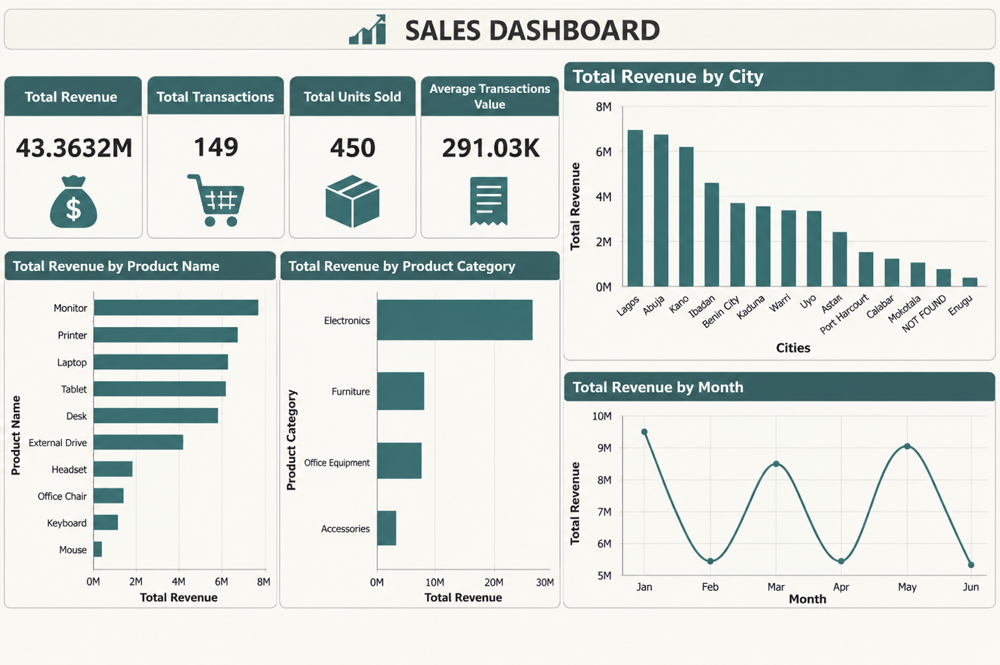
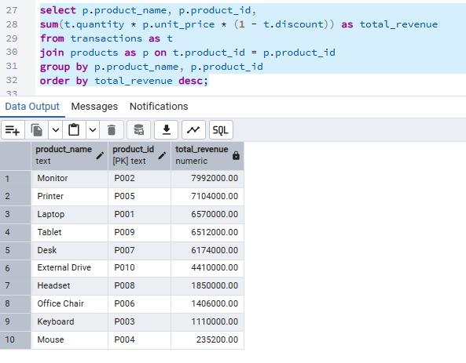
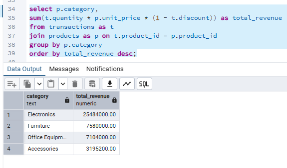
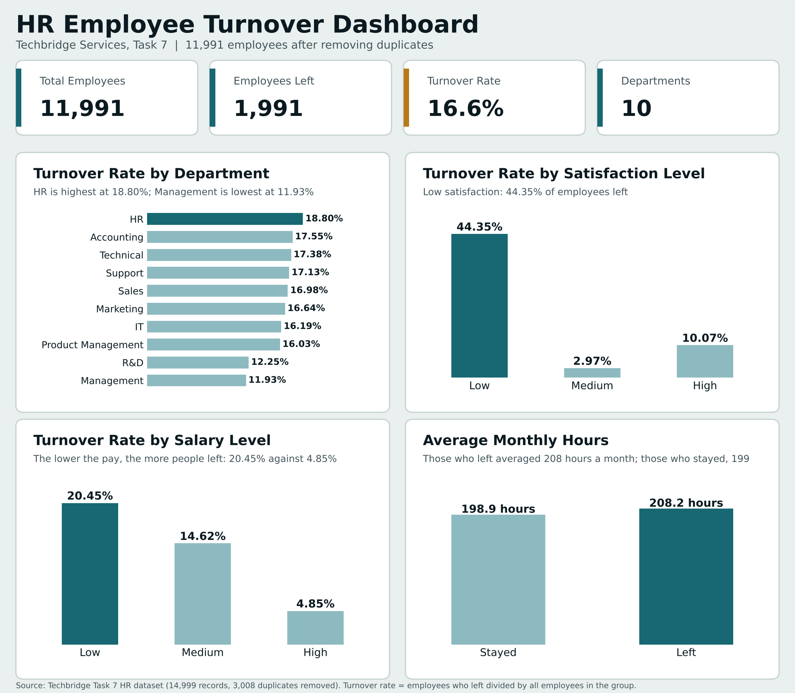

Retail Sales Performance AnalysisWhich products, cities and customers drive revenue, and when do sales rise and fall?View projectClose
The questions
- How much money did the business make?
- Which products, categories, cities and customers brought in the most?
- Which type of customer buys the most?
- How did sales move month by month?
- 43,363,200total revenue after discounts
- 149transactions
- 450units sold
- 291,028average sale

The Data
Three tables: Customers, Products and Transactions. Product ID links Transactions to Products, and Customer ID links Transactions to Customers. I merged all three into one sheet so every sale carried its price, product, customer, city and customer type.
How I cleaned it
- Merged the three sheets with VLOOKUP, and used IFERROR to label missing matches as "NOT FOUND".
- Found one sale whose customer is not in the customer list. It is kept in revenue and shown as "NOT FOUND".
- Found one sale whose product is not in the product list, so its price and revenue could not be worked out. I left it out of every total.
- Trimmed a stray double space in one column.
- Corrected one order with a negative quantity, because a quantity cannot be below zero.
- Calculated revenue as quantity × unit price, then took off the discount to get Total Revenue.
- Added a Month column with the TEXT function so I could study monthly sales.
What the Data shows
- Electronics makes the most money. It earned 25,484,000 (58.8%), more than the other three categories combined. Monitor, Printer, Laptop and Tablet alone bring in about 65%.
- Three cities bring in nearly half. Kano (7,222,000), Abuja (7,071,000) and Lagos (6,473,250) make up about 48%. Lagos has the most sales (21), but its average sale (308,250) is lower than Kano's (451,375).
- Sales rise and fall by month. January (9,642,250), May (9,167,500) and March (8,660,250) were strong. February, April and June were near 5,300,000. The number of sales stayed near 25 a month, so the swings come from the size of the orders.
- Cheap items sell a lot but earn little. Accessories are 40% of the items sold but only 7.4% of the money.
- Customer types: Retail earned 23,975,850 (55.3%), Corporate 16,320,350 (37.6%) and Wholesale 2,617,000 (6.0%). Wholesale buyers purchase often but spend only about 90,241 a time.
- A few customers matter a lot. The top five bring in 19,000,000 (43.8%), led by Ibrahim Sani (Abuja) with 4,716,000.
SQL work
I used PostgreSQL to answer five business questions. Each query joins the tables, groups the rows and adds up revenue as quantity × unit price × (1 − discount). I used an inner join, so the two sales with unknown codes are left out of some results. Tap a question to see the query and its result.
1. What is the total revenue of each product?
select p.product_name, p.product_id, sum(t.quantity * p.unit_price * (1 - t.discount)) as total_revenue from transactions as t join products as p on t.product_id = p.product_id group by p.product_name, p.product_id order by total_revenue desc;
Monitor leads with 7,992,000, then Printer with 7,104,000. Mouse is lowest with 235,200.

2. Which product category earned the most?
select p.category, sum(t.quantity * p.unit_price * (1 - t.discount)) as total_revenue from transactions as t join products as p on t.product_id = p.product_id group by p.category order by total_revenue desc;
Electronics earned 25,484,000. Accessories earned the least, 3,195,200.

3. Which customers brought in the most revenue?
select c.customer_name, c.customer_id, sum(t.quantity * p.unit_price * (1 - t.discount)) as total_revenue from transactions as t join customers as c on t.customer_id = c.customer_id join products as p on t.product_id = p.product_id group by c.customer_name, c.customer_id order by total_revenue desc;
Ibrahim Sani is first with 4,716,000, then Hauwa Ali with 3,768,000 and Tunde Adebayo with 3,726,000. Kelvin George is lowest with 109,600.

4. Which city earned the most?
select c.city, sum(t.quantity * p.unit_price * (1 - t.discount)) as total_revenue from transactions as t join customers as c on t.customer_id = c.customer_id join products as p on t.product_id = p.product_id group by c.city order by total_revenue desc;
Kano earned 7,222,000. Enugu earned the least, 125,600.

5. What is the average transaction value?
select avg(t.quantity * p.unit_price * (1 - t.discount)) as avg_transaction_value from transactions as t join products as p on t.product_id = p.product_id;
The average sale is about 291,028.

Recommendations
- Keep Monitors, Printers, Laptops and Tablets well stocked and promote them most.
- Sell accessories together with big items to raise the value of each order.
- Run offers in February, April and June to lift the slow months.
- Reward the top customers and keep finding new ones.
- Look at wholesale prices and the products wholesale buyers choose.
HR Employee Turnover AnalysisWhich groups of employees leave the company the most?View projectClose
The questions
- How many employees left the company, and what share is that?
- Which departments lose the most people?
- Does job satisfaction affect who leaves?
- Does salary level affect who leaves?
- 11,991employees analyzed
- 1,991employees who left
- 16.6%turnover rate, about 1 in every 6 people
- 10departments

The Data
14,999 employee records. For each person the data shows job satisfaction, last evaluation score, number of projects, average monthly hours, years at the company, work accident, promotion in the last five years, department, salary level, and whether the person left or stayed.
How I cleaned it
- Removed 3,008 duplicate records, which left 11,991 unique employees.
- Standardized the capital letters in the Department and Salary columns.
- Added helper columns: employee status (Stayed or Left), satisfaction category (Low below 0.50, Medium 0.50 to 0.74, High 0.75 and above), workload category and promotion status, so groups could be compared.
What the Data shows
- Unhappy employees leave the most. Employees with low satisfaction left at a rate of 44.35%, against 2.97% for medium and 10.07% for high satisfaction.
- Lower pay means more people leave. The turnover rate is 20.45% for low salaries, 14.62% for medium and 4.85% for high.
- HR loses the most people and Management the fewest. HR is at 18.80% and Accounting at 17.55%, while Management is at 11.93% and R&D at 12.25%. Most departments sit between 16% and 19%.
People mostly leave because they are unhappy or underpaid, not because of the team they work in.
Recommendations
- Focus first on low-satisfaction and low-paid employees, and ask them what is wrong.
- Review salaries, starting with the lowest-paid roles, to check that pay is fair.
- Find out why HR loses more people, and learn from what Management does well.
- Identify the main reasons employees leave and make staff feel valued, to cut hiring costs and build a more stable workforce.